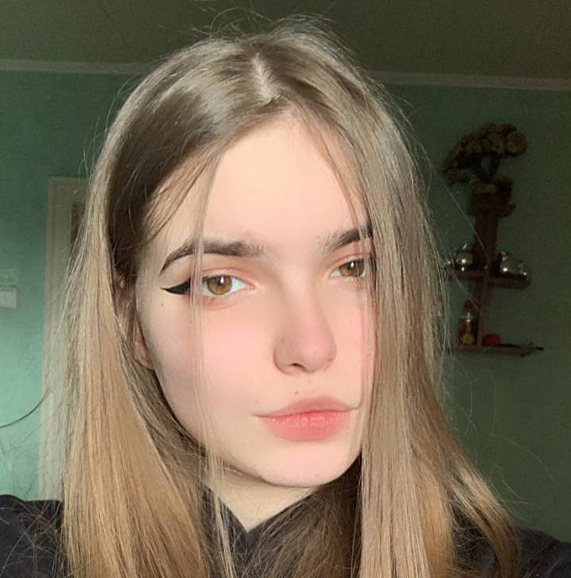
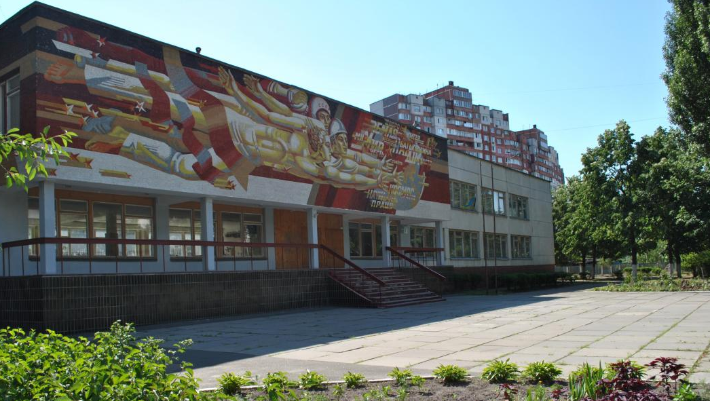
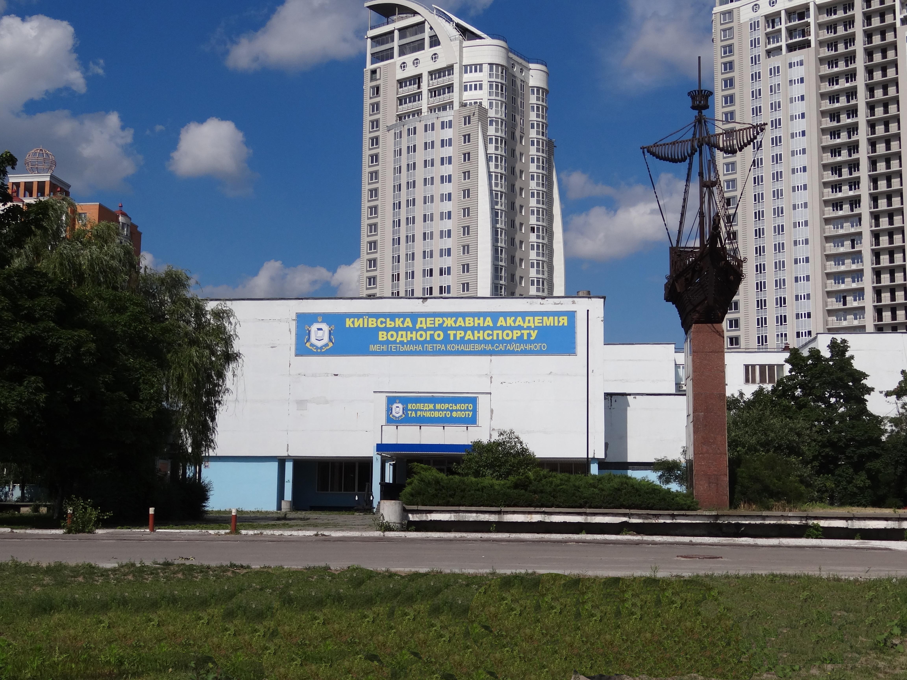

ПРИВІТ, Я АЛЬБІНА
Мені 17 років. Зараз я займаюсь програмуванням та вчуся у колледжі на 121 спеціальність "Інженерія програмного забезпечення".
Моє життя було завжди зв'язано з комп'ютерами. Мене кожен день можна було побачити за комп'ютером або за приставкою. Раніше я не думала,що я буду якось зв'язана з програмуванням.
Але мій дядя почав писати плагіни на мові JAVA,я дивилася і мені це було цікаво,тому я вирішила піти до курсів,це були курси Web-програмування.


Школа
Навчалася я у 251 школі міста Києва. Я потрапила до математичного класу. Взагалі школа з поглибленою англійскою мовою. У третьому класі я була відміннецею,але після п'ятого класу навчання трохи погірашлося.
Про школу у мене залишилися тількі негативні спогади,тому що я не знаходила спільну мову з вчителями.
Коледж
У колледжі я навчаюсь вже 3-й рік. Сюди я змогла вступити до бюджтеного місця,але до стипендії трохи не дотягнула. Спочатку з моїми однокурсниками були проблеми,
не змогли знайти спільну мову. Через деякий час всі почали дуже файно спілкуватися між собою. Навчатися я буду 4 курси,а після піти одразу працювати.
